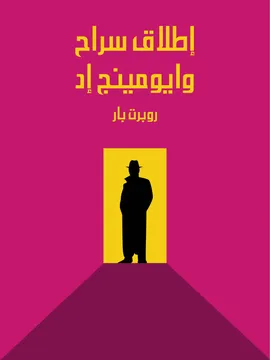

إطلاق سراح وايومينج إد

قراءة عربية أصلية محددة النطاق في الصفحات 9 إلى 14 من ملف PDF المرتبط، وليست تلخيصا كاملا للكتاب. نناقش ما تدعمه هذه المقاطع فقط.
اعتراف الرجل العجوز: ليس هذا سري الذي أحميه
يستهل الراوي القصة بوصف إحساسه بازدراء الرجل العجوز له الواضح للغاية، ودرع التحفظ البارد المكتمل الذي كاد يتوقع معه أن يراه يتكبر كمن أهانه شخص ويغادر الغرفة. لكن بعد لحظات قليلة من بداية حديثه بعبارات لها نفس حدة عباراته، أمسكت يدا العجوز المرتجفتان بذراعي الكرسي، وأظهرت عيناه الآخذتان في الاتساع أن الراوي أطلق سهمه العشوائي مباشرة في قلب الحقيقة؛ فبدلًا من أن يصبح وجهه شاحبًا ظهرت عليه بقع وتحول للون الأخضر. وعندما اتهمه أخيرًا بالكذب قام ببطء وهو يرتجف مثل رجل مشلول، ثم جلس بلا حول ولا قوة، وسقط رأسه على الطاولة وأجهش بالبكاء قائلًا: ليساعدني الرب! هذا ليس سري الذي أحاول حمايته. قفز الراوي إلى الباب فأدار المفتاح، وسكب له كأسًا من أجود أنواع الكونياك وربت على كتفه: الوضع ليس أسوأ مما كان عليه قبل نصف ساعة، ولن يفشي السر. شرب العجوز واستعاد السيطرة على نفسه منتحبًا أنه أخفق في مهمته وأنه كان أحمق مستهترًا، وكانت هناك أمور كثيرة تتوقف على عدم ارتكابه أي خطأ.
زاوية وحدود القراءة
قراءة موجزة من ص ٩ إلى ص ١٤ من أصل ٢٦ صفحة، تعرض مطلع القصة، لا القصة كاملة.
الطبعة والقراءة
هذه الترجمة العربية صادرة ومتاحة مجانًا من مؤسسة هنداوي بشكل قانوني؛ حيث إن نص العمل الأصلي يقع في نطاق الملكية العامة تبعًا لقوانين الملكية الفكرية.
تنزيل PDF المجاني ↓ القراءة والمصدر الرسمي ↗